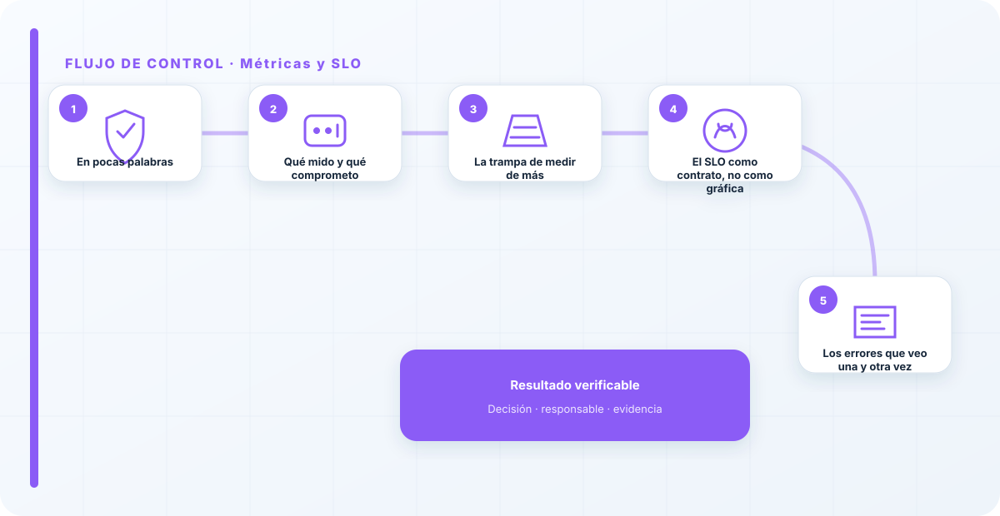
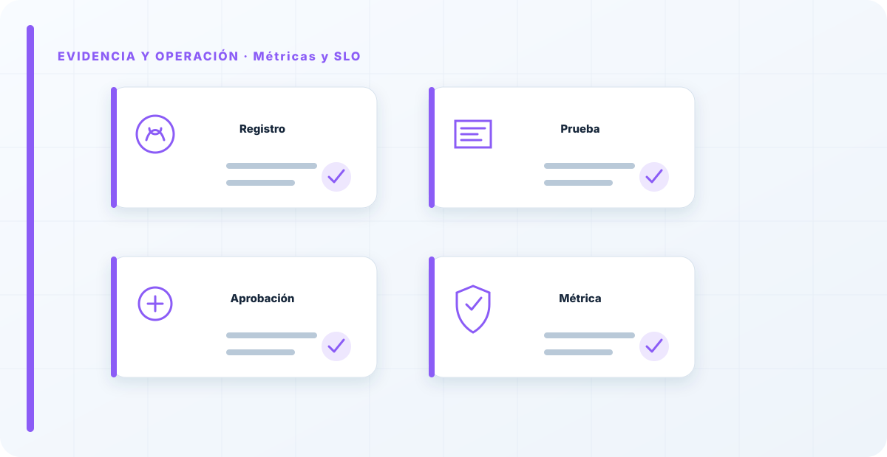

En pocas palabras
Las métricas y los SLO (objetivos de nivel de servicio) son lo que convierte la observabilidad en gestión. Observar te da datos; las métricas te dicen cuáles importan, y los SLO te comprometen a un umbral. Sin esto, tienes paneles bonitos y ninguna decisión; con esto, sabes cuándo tu sistema de IA está por debajo de lo aceptable y hay que actuar.
Qué mido y qué comprometo
Elijo pocas métricas con sentido —latencia, tasa de error, calidad de respuesta, coste, y señales de seguridad— y sobre las que de verdad importan pongo un SLO: un objetivo explícito y medible, tipo "la respuesta útil por debajo de X segundos el 99% de las veces".
El SLO es lo que dispara la acción cuando se incumple; no es una gráfica más, es una promesa con consecuencias. Una métrica sin umbral es una curiosidad; una con SLO y dueño es una herramienta de gestión.
La trampa de medir de más
La tentación es medir todo, y medir todo es, en la práctica, no medir nada, porque nadie mira veinte gráficas a la vez. Prefiero cinco métricas con un dueño y un umbral a un panel enorme que nadie usa para decidir.
La métrica vale por la decisión que provoca, no por lo completa que parece. Esto enlaza con la monitorización de modelos: los umbrales que de verdad sirven son los que llevan a reentrenar, revisar o parar, no los que solo se pintan.

El SLO como contrato, no como gráfica
Un SLO solo sirve si es un compromiso de verdad, con nombre detrás. Por eso, cuando defino uno, defino también quién responde si se incumple y qué pasa entonces: a quién avisa, qué acción dispara, con qué urgencia. Un SLO sin dueño ni consecuencia es una intención, y las intenciones no gestionan nada.
Esta diferencia —contrato frente a gráfica— es la que separa una organización que gestiona sus servicios de IA de una que solo los mira. El SLO obliga; la gráfica solo informa. Y en producción, lo que necesitas es algo que obligue a actuar cuando las cosas se salen de lo aceptable.
Un panel con cincuenta gráficas es casi siempre señal de que nadie ha decidido qué importa de verdad. Las métricas no son para lucir; son para saber cuándo actuar. Si una métrica no tiene un umbral que dispare algo y alguien que responda, es decoración. Menos métricas, con SLO y dueño, valen más que un tablero espectacular en la sala de reuniones.
Los errores que veo una y otra vez
- Medir todo y no decidir nada.
- Métricas sin umbral ni dueño.
- Paneles que nadie mira.
- No comprometer un SLO explícito.
- Confundir "hay datos" con "hay gestión".
Cómo lo llevaría a un entorno real
Cuando aterrizo métricas y slo en una organización, no empiezo por comprar una herramienta ni por redactar veinte páginas. Empiezo por dibujar qué ocurre hoy: quién solicita el cambio, quién lo aprueba, qué sistemas intervienen, qué datos cruzan el proceso y quién se entera cuando algo falla. Ese dibujo suele descubrir más problemas que cualquier checklist. En observabilidad, lo peligroso no es solo carecer de controles; también lo es creer que existen porque alguien los escribió una vez.
Después separo lo imprescindible de lo deseable. Lo imprescindible debe poder comprobarse: un responsable identificado, una regla clara, una evidencia fechada y un mecanismo para reaccionar. En este caso revisaría especialmente SLI, SLO y umbral. No me vale una respuesta del tipo «lo gestiona el proveedor» o «eso lo mira seguridad». Necesito saber qué persona toma la decisión, con qué información y dentro de qué plazo.
La implantación debe crecer con el riesgo. Un piloto interno puede funcionar con una ficha breve y una revisión manual. Un sistema que afecta a clientes, empleados, dinero o información sensible necesita segregación de funciones, pruebas independientes, monitorización y un expediente mantenido. Mi criterio es sencillo: cuanto más difícil sea deshacer el daño, más fuerte debe ser la barrera antes de producción.
Decisiones que deben quedar por escrito
Hay decisiones que no deberían vivir en una reunión ni en un mensaje de chat. Para métricas y slo dejaría documentados el alcance, los supuestos, los límites de uso, las excepciones aceptadas y las condiciones que obligan a detener o reevaluar. El documento no tiene que ser enorme, pero sí debe permitir que otra persona entienda por qué se hizo lo que se hizo.
También registraría quién puede cambiar error budget, quién valida alerta y quién recibe las alertas relacionadas con servicio. Cuando esas tres responsabilidades se mezclan, aparece el clásico problema: el mismo equipo construye, aprueba y declara que todo funciona. No siempre se puede separar por completo, sobre todo en organizaciones pequeñas, pero al menos debe existir una revisión por alguien que no dependa del éxito inmediato del despliegue.
Las excepciones merecen un tratamiento propio. Una excepción sin fecha de caducidad acaba convirtiéndose en la arquitectura real. Por eso exigiría motivo, riesgo aceptado, responsable, compensaciones, fecha de revisión y criterio de cierre. Si falta uno de esos elementos, no es una excepción gestionada; es una deuda invisible.

Un ejemplo práctico
Imaginemos que un equipo quiere incorporar métricas y slo a un servicio que ya está en producción. La propuesta promete reducir tiempos y automatizar tareas, pero utiliza componentes que cambian con frecuencia. Antes de aprobarlo, pediría una prueba limitada, un inventario de dependencias, un flujo de datos y una definición clara de qué acciones quedan fuera del alcance.
Durante la prueba recogería resultados normales y casos límite. No solo miraría si funciona; comprobaría qué ocurre cuando faltan datos, cambia una versión, se pierde conectividad, llega una entrada manipulada o un usuario intenta superar sus permisos. Ahí es donde se ve si el diseño aguanta. En muchas pruebas felices todo parece seguro porque nadie ha intentado romper la hipótesis de partida.
Si los resultados son aceptables, la salida a producción tendría condiciones: versión fijada, configuración aprobada, logs disponibles, responsables de guardia, procedimiento de rollback y revisión tras las primeras semanas. Si alguno de esos elementos no existe, prefiero retrasar el despliegue. Un día de demora suele ser más barato que investigar después un comportamiento que nadie puede reconstruir.
Qué evidencias guardaría
Para demostrar que el control funciona conservaría evidencias que cuenten una historia completa, no capturas sueltas. La historia debe enlazar necesidad, decisión, implementación, prueba y operación. En métricas y slo eso incluye como mínimo la ficha del activo, el diagrama vigente, la configuración aprobada, el resultado de las pruebas y el registro de cambios.
No guardaría información por acumular. Si los logs contienen prompts, documentos, datos personales o secretos, aplicaría minimización, control de acceso y retención. La evidencia debe ayudar a investigar y auditar sin crear una segunda fuga de información. Es frecuente endurecer el sistema principal y dejar un repositorio de evidencias abierto a demasiadas personas.
- Propietario y finalidad de métricas y slo, con fecha de revisión.
- Inventario de SLI, SLO y dependencias asociadas.
- Criterios de aceptación y resultados sobre umbral y error budget.
- Configuración efectiva, versión y aprobación del cambio.
- Alertas, incidentes, excepciones y acciones correctivas cerradas.
Señales de que el control no está funcionando
El primer síntoma es que nadie sabe responder con rapidez quién es el responsable. El segundo es que la documentación describe una versión distinta de la que está operando. El tercero es que las alertas existen, pero llegan a un buzón que nadie revisa. Cuando aparecen esos tres síntomas, el problema no es tecnológico: el control se ha desconectado de la operación.
También desconfío de las métricas demasiado perfectas. Cero incidentes, cero excepciones y cien por cien de cumplimiento pueden significar excelencia, pero con frecuencia significan que no estamos mirando. Prefiero indicadores que enseñen tendencia: tiempo de corrección, antigüedad de excepciones, cobertura de pruebas, cambios sin revisión y reincidencias.
Por último, revisaría el comportamiento después de cada cambio significativo. En IA, una actualización de modelo, dataset, prompt, herramienta, permiso o proveedor puede alterar el riesgo sin cambiar el nombre del servicio. Si el proceso solo reevalúa cuando se crea un proyecto nuevo, se quedará ciego durante la mayor parte de la vida útil.
Mi criterio de cierre
Considero que métricas y slo está razonablemente controlado cuando el equipo puede explicar el proceso sin depender de una sola persona, reconstruir una decisión con evidencias y detener el servicio sin improvisar. No busco perfección documental; busco que la organización pueda tomar decisiones repetibles bajo presión.
El cierre no consiste en marcar todas las casillas. Consiste en demostrar que los riesgos relevantes tienen propietario, que los controles se prueban y que las desviaciones producen una acción. Si la evidencia no cambia ninguna decisión, probablemente estamos generando burocracia. Si una decisión importante no deja evidencia, estamos creando fragilidad.
Este enfoque es el que intento mantener en toda CyberLibrary AI: explicar el control de forma que lo entienda negocio, pero con suficiente profundidad para que arquitectura, seguridad, auditoría y operaciones puedan aplicarlo de verdad.
Referencias y marcos relacionados
Contenido educativo y técnico. No sustituye asesoramiento jurídico ni una auditoría formal.